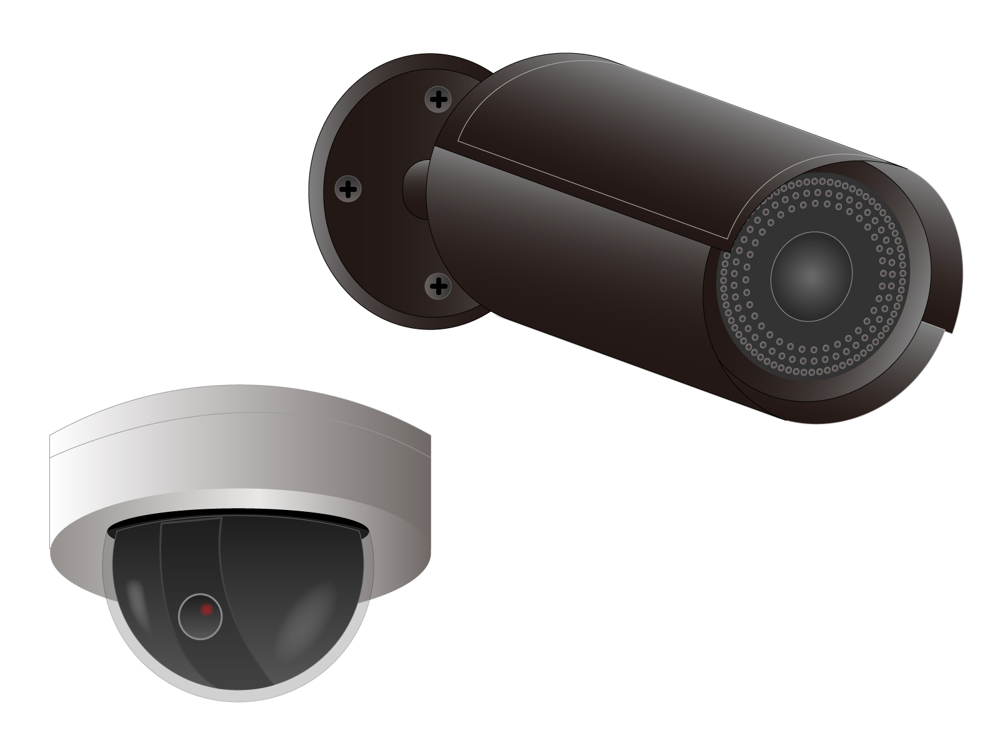

インターネットと接続して、撮影した映像をクラウド上に録画することで、PCやスマートフォンでいつでもどこからでも確認することができるカメラのことです。
ローカル・アナログ防犯カメラ
録画機やHDDレコーダー、カメラモニタを用いることで使用可能。録画データもレコーダーに保存可能
クラウド防犯カメラ
インターネットと接続してクラウド上にデータを保存します。 録画機が必要ないので保守管理、メンテナンスが不要になります。
映像がクラウドにあるので、インターネットに接続できれば、いつでもどこからでも見られます。
撮影データをクラウド上に記録するので、撮影データを保管するレコーダー（ハードディスク）が不要なので、スペースを有効に使えます。 また故障が心配なハードディスクも不要なので、コストが気になるメンテナンスも必要ありません。
震災・災害時も、カメラとネットワークが動いている限り、クラウド上にある映像を確認できます。 またデータも、クラウド最大手であるAmazon Web Services（AWS）にて3拠点間で冗長化しておりアクセス量の増減によりサーバ能力を自動で増減。仮想サーバの冗長化と負荷分散により安全性を追求しています。
特許技術差分転送や、動きのある映像だけフレームレートを上げる可変フレームレートなどの機能を利用することで、 データの転送量を減らしコストを大幅に削減できます。
ローカル・アナログ防犯カメラ
録画機やHDDレコーダー、カメラモニタを用いることで使用可能。録画データもレコーダーに保存可能
防犯カメラ
インターネットと接続してクラウド上にデータを保存します。 録画機が必要ないので保守管理、メンテナンスが不要になります。
ユーザーの接続ポイントはすべてHTTPSで暗号化しています。 その他IPフィルタリング・端末認証機能、データストレージも暗号化しており、データを管理しているAWSでは3拠点間での冗長化を施しております。
人間の目で見たものは実現できます。顔認証の機能を利用して未成年検知やリピータ分析、人数カウントや表情分析も可能です。 物体検知では無断駐車を、動体検知では河川の水位が検知できます。
Google Mapとカメラのロケーション情報を連携する事ができる為、マップ上でカメラの設定場所を俯瞰して見ることができます。 また、気象情報も合わせて表示することができる為、大雨などの災害が起こっている地域のカメラがひと目でわかります。
Ciao Cameraは防犯だけではなく、防災、管理、 マーケティングなど 様々な場面で活用することができます。
不動産や、医療・福祉施設の管理から、行政の現場でもご利用頂いております。
河川の監視
クラウドを利用したカメラサービスだからこそ実現した、「複数拠点からの同時アクセスが可能」な点を高く評価していただきました。 関係者が同時に監視カメラデータにアクセスできるので、情報共有のタイムロスがなくなり、市民の迅速な避難行動につながります。
オペレーション管理
東京・神奈川にある複数店舗で利用されています。キッチンでの衛生管理やスタッフのオペレーション管理が本部にて一括で行えることや、管理画面が多機能で見やすい点を気に入って使い続けていただいております。
店舗の状況確認
ジュース専門店をオープンするにあたって、スマートフォンで確認できるクラウド対応のCiao Cameraを気に入って選んでいただきました。 入店時間帯を把握して顧客管理をしたり、不審者の監視に活用されています。 閉店中の防犯対策にモーション検知が役立っています。
防犯対策
東北・北陸地方の店舗に設置された数十台の防犯カメラに、Ciao Cameraを導入いただいております。店舗を管理する担当者の方々が同時に遠隔監視できる、Ciao Cameraを採用いただきました。現在は死角やバックヤードなどの防犯対策に活用されています。
オペレーション管理
金銭授受の誤りなど、お客様とのトラブル抑止や、防犯対策の監視ツールとして導入いただきました。画像の録画のみならず、音声を録音。スタッフのサービス品質の向上やトレーニングに役立てていただいております。
マーケティング活用
客層を把握して、ターゲット広告を的確に配信するため、Ciao Cameraを選んでいただきました。 現在は人数カウント・リピータ分析を利用して、客層に合わせたメニューを開発されています。今後は食べ残しの把握や店舗管理者の工数削減などもご検討中です。
セキュリティ管理
業種柄、機密事項の取り扱いに十分な配慮が 必要となるため、マルチデバイスからセキュリティ管理ができるCiao Cameraを選んでいただきました。情報漏洩防止はもちろんのこと、来訪者の管理も行っており、来所される方に安心・安全を提供されています。
防犯対策
クラウドで画像を一括管理できるためCiao Cameraを採用いただきました。ホテル裏口の人の出入りを監視されています。モーション検知のメール通知機能を使って、不審者の侵入を防いでいます。
ゲートウェイ機能設定料※1
￥10,000～
クラウド登録設定料※2
￥3,000～
サービス利用料※3
￥2,000/月～
※1ゲートウェイ機は機器延長保証サービスがあります
※2,3カメラ1台毎の料金です
※3サービス利用料には、カメラViewer(閲覧)サービス、録画サービスが含まれますその他オプションサービス料金はご相談ください
Q.
指定機種はありません。
※ 一部、対応していない機種がありますのでお問い合わせください
Q.
ご利用いただけます。
※ 一部、対応していない機種がありますのでお問い合わせください
Q.
小型のPCで、画像データの転送前処理など一次処理を行います。
Q.
標準は7日観です。保存期間を超えると自動でデータは削除されます。
※ 一部、対応していない機種がありますのでお問い合わせください※ 別途お申込みにより7日間以上の保存期間もお選びいただけます